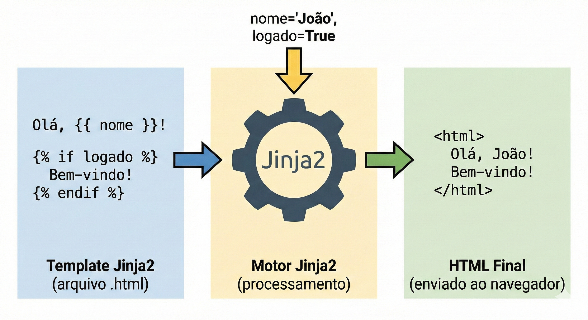
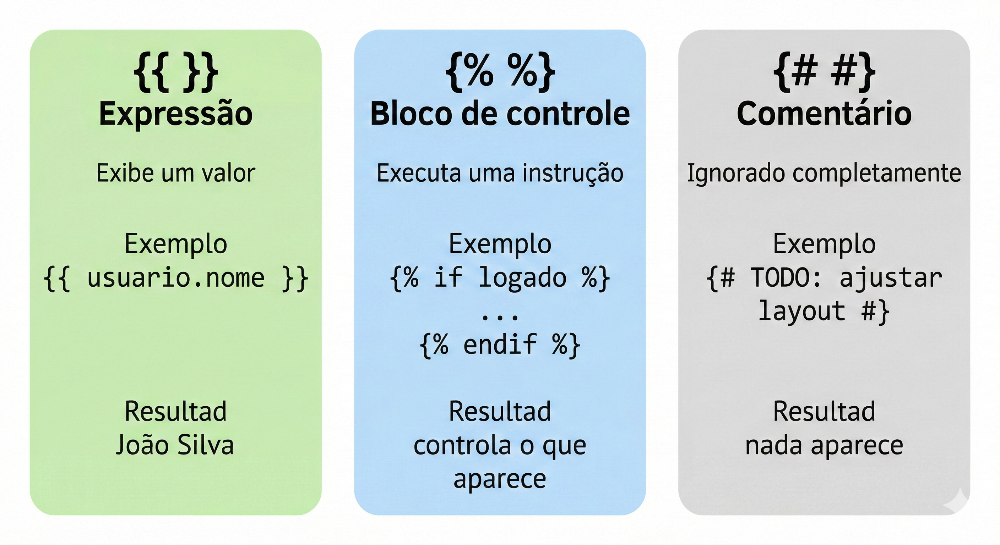
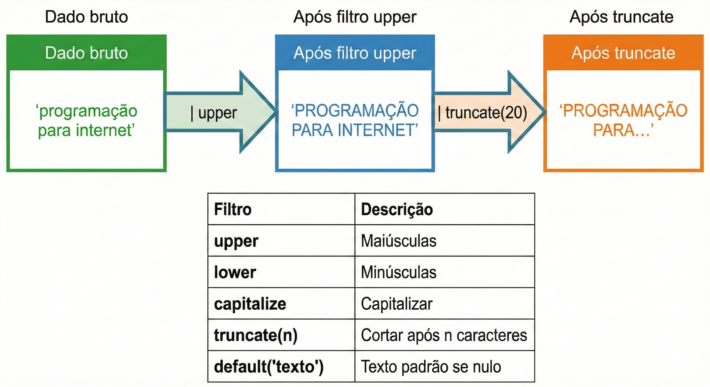
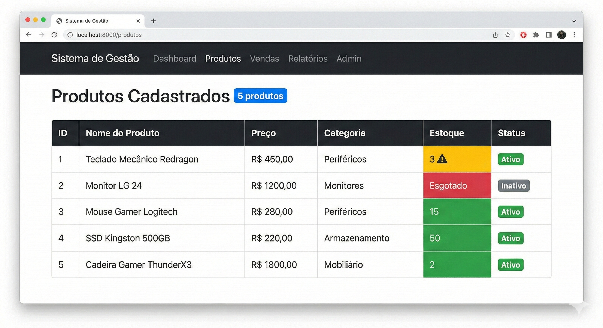
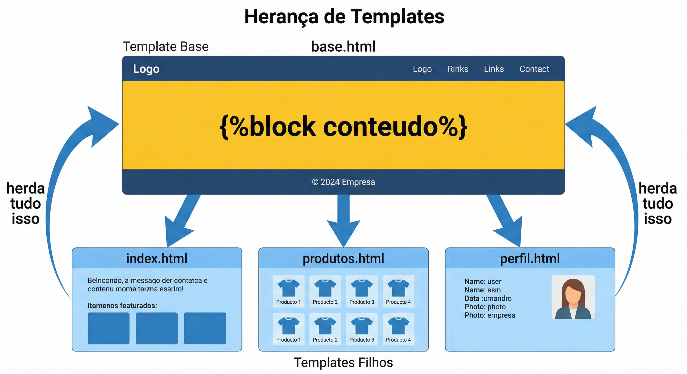
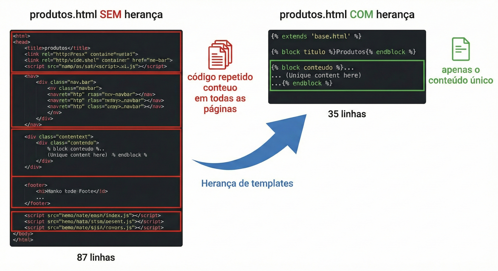
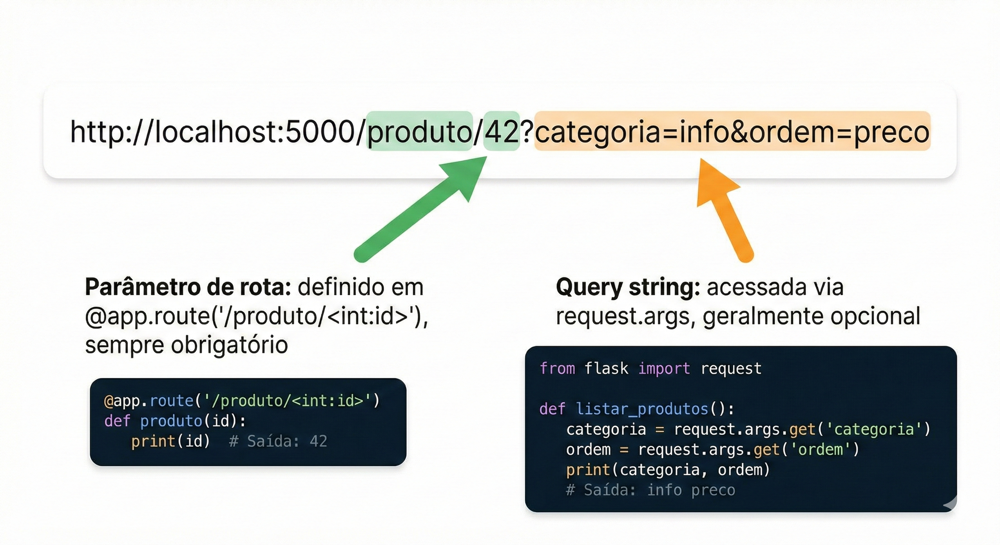
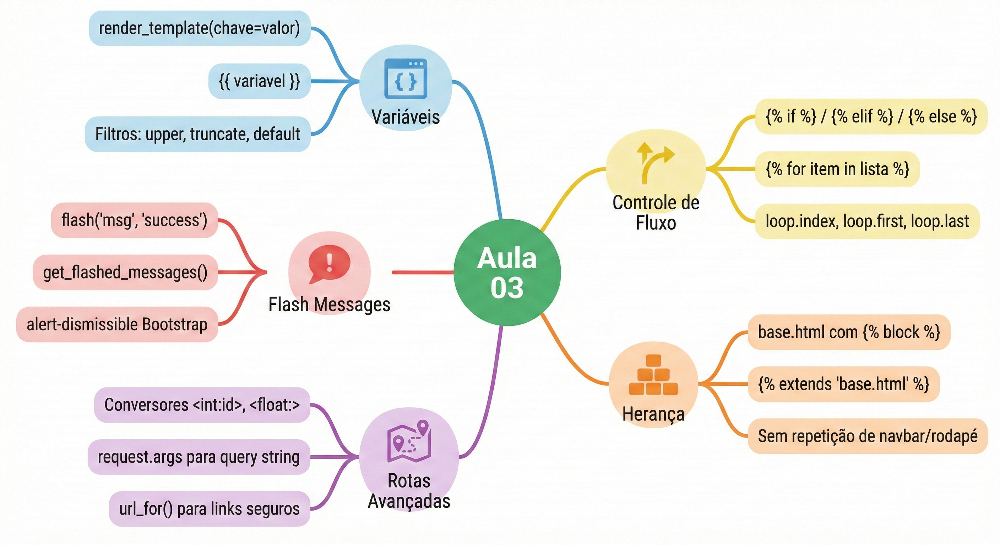

Aula 03 — Templates Jinja2 e Rotas¶
Disciplina: Programação para Internet (ILP951) Professor: Ronan Adriel Zenatti · ronan.zenatti@cps.sp.gov.br Fatec Jahu — 2º Semestre/2026
Pré-requisitos: Aula 02 concluída — Flask instalado,
app.pycom rotas básicas funcionando, Bootstrap aplicado nos templates.
🎯 Objetivos da Aula¶
Ao final desta aula você deverá ser capaz de:
- Passar variáveis do Python para os templates com
render_templatee exibi-las com{{ }}. - Formatar dados diretamente no template usando filtros Jinja2 (
upper,default,length,round…). - Controlar o que aparece na página com
{% if %}e gerar HTML repetitivo com{% for %}. - Eliminar a repetição de código criando um template base com
{% block %}e páginas filhas com{% extends %}. - Gerar URLs com segurança usando
url_forem vez de escrevê-las manualmente. - Criar rotas com conversores de tipo (
int,float,path) e ler a query string comrequest.args. - Comunicar o resultado de uma ação ao usuário com flash messages.
Na Aula 02 você criou rotas Flask e usou render_template para servir arquivos HTML. Mas os templates que criamos até agora são puramente estáticos — o mesmo HTML é entregue para qualquer pessoa que acesse a página. Hoje isso muda completamente. Você vai aprender a passar variáveis do Python para o HTML, criar estruturas condicionais e loops dentro dos templates, construir um template base que todas as páginas herdam — eliminando de vez a repetição de código — e dominar as rotas com parâmetros de forma aprofundada. Ao final desta aula, sua aplicação vai gerar páginas verdadeiramente dinâmicas, com conteúdo diferente dependendo dos dados recebidos.
🗺️ Mapa Mental da Aula¶
Antes de entrar no detalhe, veja o mapa dos conceitos de hoje. Toda página que geramos agora segue o mesmo fluxo: uma requisição chega a uma rota, a rota monta os dados em Python e entrega ao template Jinja2, que aplica marcações, controle de fluxo e herança para produzir o HTML final que volta ao navegador.
flowchart LR
ROOT(("Templates Jinja2<br/>e Rotas"))
ROOT --> T1
subgraph T1["🏷️ Marcacoes Jinja2"]
direction TB
T1A["Expressao: exibe valor"]
T1B["Controle: if / for"]
T1C["Comentario: ignorado"]
end
ROOT --> T2
subgraph T2["📤 Dados no template"]
direction TB
T2A["render_template(**dados)"]
T2B["Filtros: upper, default, length"]
end
ROOT --> T3
subgraph T3["🔀 Controle de fluxo"]
direction TB
T3A["if / elif / else"]
T3B["for + variavel loop"]
end
ROOT --> T4
subgraph T4["🧬 Heranca de templates"]
direction TB
T4A["base.html define block"]
T4B["Pagina filha usa extends"]
end
ROOT --> T5
subgraph T5["🧭 Rotas e URLs"]
direction TB
T5A["Conversores int/float/path"]
T5B["url_for gera a URL"]
T5C["request.args: query string"]
end
ROOT --> T6
subgraph T6["💬 Flash messages"]
direction TB
T6A["flash() cria"]
T6B["get_flashed_messages() exibe"]
endParte 1 — O que é Jinja2 e como ele se encaixa no Flask¶
O problema que o Jinja2 resolve¶
Na Aula 02, quando precisávamos exibir o nome de um usuário na página, a solução era montar a string HTML inteira dentro do Python e devolvê-la como resposta. Isso funciona para coisas simples, mas imagine tentar montar uma tabela com 50 linhas de dados vindos do banco, ou exibir uma mensagem de "Bem-vindo, João!" apenas se o usuário estiver logado — tudo isso concatenando strings em Python. Rapidamente o código se torna incompreensível.
O que você realmente precisa é de uma forma de escrever o HTML de forma natural, mas com "espaços reservados" onde os dados do Python serão inseridos quando a página for gerada. É exatamente isso que o Jinja2 oferece.
O que é o Jinja2¶
Jinja2 é o motor de templates padrão do Flask. Ele permite que você escreva arquivos HTML normais com a adição de uma sintaxe especial — marcações entre chaves {{ }} e {% %} — que o Jinja2 interpreta e substitui pelos dados reais antes de enviar o HTML ao navegador.
O processo funciona assim: o Flask chama render_template('pagina.html', nome='João'), o Jinja2 abre o arquivo pagina.html, encontra todas as marcações especiais, substitui {{ nome }} pelo valor 'João', e devolve o HTML final — puro, sem nenhuma marcação Jinja2 — para o navegador. O navegador nunca vê o Jinja2, só vê HTML.

Os três tipos de marcação do Jinja2¶
Antes de ver código, é essencial entender que o Jinja2 tem três tipos distintos de marcação, cada uma com um propósito diferente. Confundi-las é o erro mais comum de quem está começando.
O primeiro tipo é a expressão, escrita com {{ }} (duplas chaves). Ela exibe um valor — seja uma variável, o resultado de uma operação ou o retorno de uma função. Tudo que você colocar entre {{ }} aparecerá na página.
O segundo tipo é o bloco de controle, escrito com {% %} (chave com porcentagem). Ele executa uma instrução de controle — como um if, um for, ou a definição de um bloco em herança. Ele não exibe nada diretamente; ele controla o fluxo de geração do HTML.
O terceiro tipo é o comentário, escrito com {# #}. Ele é completamente ignorado pelo Jinja2 e nunca aparece no HTML final — nem como comentário HTML. É útil para anotações internas nos templates que você não quer que apareçam no código-fonte da página.

Parte 2 — Passando variáveis do Python para o template¶
Como enviar dados com render_template¶
A função render_template aceita, além do nome do arquivo, qualquer número de argumentos nomeados. Cada argumento nomeado se torna uma variável disponível no template. A sintaxe é simples:
return render_template('pagina.html', nome='João', idade=22, logado=True)
Dentro do template, {{ nome }} exibe João, {{ idade }} exibe 22, e {{ logado }} exibe True. Esses valores podem ser strings, números, booleanos, listas, dicionários, ou qualquer objeto Python.
Exemplo prático 1 — Exibindo variáveis simples¶
Vamos construir esse exemplo em pequenos passos. Comece adicionando uma única variável à rota inicial do seu app.py e veja ela aparecer na página antes de crescer o resto.
Passo 1 — passe uma variável. No app.py, ajuste a rota inicial para enviar um título:
from flask import Flask, render_template
app = Flask(__name__)
@app.route('/')
def pagina_inicial():
# Um único dado, para começar
return render_template('index.html', titulo='Sistema de Gestão')
No templates/index.html, use esse título dentro do <title> e em um <h1>:
<title>{{ titulo }}</title>
...
<h1 class="display-4">{{ titulo }}</h1>
Salve os dois arquivos e recarregue http://localhost:5000. Observe que a aba do navegador e o título grande da página agora mostram exatamente o texto que está no Python — mude 'Sistema de Gestão' para outra coisa, salve e recarregue: a página acompanha, sem você tocar no HTML.
Passo 2 — envie vários dados de uma vez. Digitar titulo=..., subtitulo=..., versao=... fica cansativo quando são muitos valores. A forma organizada é montar um dicionário e desempacotá-lo com **:
@app.route('/')
def pagina_inicial():
dados = {
'titulo': 'Sistema de Gestão',
'subtitulo': 'Desenvolvido com Python e Flask',
'versao': '1.0.0',
}
# O ** "desempacota" o dicionário em argumentos nomeados
return render_template('index.html', **dados)
Acrescente {{ subtitulo }} e {{ versao }} em algum ponto do index.html, salve e recarregue. Note que cada chave do dicionário virou uma variável no template — dados['versao'] está disponível como {{ versao }}.
Consolidação — o app.py completo desta etapa. Agora junte tudo. Este é o app.py da rota inicial com todos os dados que vamos exibir:
from flask import Flask, render_template
app = Flask(__name__)
@app.route('/')
def pagina_inicial():
# Dados que serão passados para o template
# Podem ser qualquer tipo Python: strings, números, listas, dicionários...
dados = {
'titulo': 'Sistema de Gestão',
'subtitulo': 'Desenvolvido com Python e Flask',
'versao': '1.0.0',
'autor': 'FATEC Jahu — Turma GTI 2026',
'total_usuarios': 128,
'sistema_ativo': True
}
# Os dados são passados como argumentos nomeados para render_template
# O nome do argumento vira o nome da variável no template
return render_template('index.html', **dados)
# O ** "desempacota" o dicionário: é equivalente a escrever
# render_template('index.html', titulo=dados['titulo'], subtitulo=dados['subtitulo'], ...)
if __name__ == '__main__':
app.run(debug=True)
E o templates/index.html completo que consome todas essas variáveis:
<!DOCTYPE html>
<html lang="pt-BR">
<head>
<meta charset="UTF-8">
<meta name="viewport" content="width=device-width, initial-scale=1.0">
{# O título da aba usa a variável 'titulo' passada pelo Python #}
{# Comentários Jinja2 não aparecem no HTML final — nem no código-fonte #}
<title>{{ titulo }}</title>
<link href="https://cdn.jsdelivr.net/npm/bootstrap@5.3.0/dist/css/bootstrap.min.css"
rel="stylesheet">
</head>
<body>
<nav class="navbar navbar-dark bg-dark">
<div class="container">
{# navbar-brand usa a variável 'titulo' #}
<a class="navbar-brand" href="/">{{ titulo }}</a>
</div>
</nav>
<div class="container mt-5">
{# display-4 para o título principal vindo do Python #}
<h1 class="display-4">{{ titulo }}</h1>
{# lead para o subtítulo #}
<p class="lead">{{ subtitulo }}</p>
<hr>
{# Exibindo dados menores em badges Bootstrap #}
<p>
Versão:
{# badge = componente Bootstrap para exibir informações em destaque #}
<span class="badge bg-secondary">{{ versao }}</span>
</p>
<p>
Desenvolvido por:
<strong>{{ autor }}</strong>
</p>
<p>
Usuários cadastrados:
{# bg-primary = badge azul #}
<span class="badge bg-primary">{{ total_usuarios }}</span>
</p>
{# Exibindo o valor booleano — por enquanto só mostramos True/False #}
{# Na próxima seção aprenderemos a usar isso para mostrar/esconder conteúdo #}
<p>
Status do sistema:
<span class="badge bg-success">{{ sistema_ativo }}</span>
</p>
</div>
<script src="https://cdn.jsdelivr.net/npm/bootstrap@5.3.0/dist/js/bootstrap.bundle.min.js">
</script>
</body>
</html>
Acesse http://localhost:5000 e veja as variáveis Python sendo exibidas no HTML. Tente mudar os valores no app.py, salve e recarregue o navegador — a página reflete imediatamente as mudanças, sem tocar no HTML.
Parte 3 — Filtros Jinja2: formatando os dados exibidos¶
Às vezes o dado que você recebe do Python precisa de uma transformação antes de ser exibido — formatar um número, colocar em maiúsculas, truncar um texto longo, ou tratar o caso em que o valor é vazio. O Jinja2 oferece filtros para isso: funções de formatação aplicadas diretamente na expressão usando o caractere | (pipe).
A sintaxe é {{ variavel | filtro }}. Você pode encadear múltiplos filtros: {{ variavel | filtro1 | filtro2 }}.

Os filtros mais usados no dia a dia são: upper (converte para maiúsculas), lower (minúsculas), capitalize (primeira letra maiúscula), title (primeira letra de cada palavra maiúscula), truncate(n) (corta o texto em n caracteres adicionando "..."), default('valor') (exibe um valor padrão se a variável for vazia ou indefinida), length (retorna o tamanho de uma lista ou string), e round(n) (arredonda números).
Experimente um filtro por vez no seu index.html. Comece só com o upper:
{# upper: tudo em maiúsculas #}
<p>{{ titulo | upper }}</p>
Salve e recarregue: o título aparece todo em maiúsculas, mas a variável titulo no Python continua intacta — o filtro só muda a exibição. Agora adicione o default, que é o mais útil para evitar espaços em branco na tela quando um dado não veio:
{# default: se 'apelido' não existir ou for vazio, exibe "Sem apelido" #}
<p>{{ apelido | default('Sem apelido') }}</p>
Como você ainda não passou apelido pela rota, recarregue e observe que aparece "Sem apelido" em vez de um erro ou de um espaço vazio. Com a ideia entendida, veja os demais filtros reunidos:
{# Exemplos de filtros em uso #}
{# upper: tudo em maiúsculas #}
<p>{{ titulo | upper }}</p>
{# capitalize: primeira letra maiúscula, resto minúsculo #}
<p>{{ autor | capitalize }}</p>
{# truncate: exibe no máximo 30 caracteres e adiciona "..." se necessário #}
<p>{{ descricao | truncate(30) }}</p>
{# default: se 'apelido' não existir ou for vazio, exibe "Sem apelido" #}
<p>{{ apelido | default('Sem apelido') }}</p>
{# length: conta quantos itens há em uma lista #}
<p>Total de itens: {{ lista_produtos | length }}</p>
{# Encadeando filtros: trunca E depois capitaliza #}
<p>{{ descricao | truncate(50) | capitalize }}</p>
Parte 4 — Estruturas de controle: if, for e o poder dos loops¶
O bloco if: exibindo conteúdo condicionalmente¶
Um dos recursos mais valiosos do Jinja2 é o {% if %}, que permite mostrar ou esconder partes do HTML com base em condições — exatamente como um if no Python, mas dentro do template. A estrutura é idêntica ao Python, exceto que cada bloco termina com uma tag de fechamento explícita ({% endif %}).
Antes de ver código, pense em três situações reais onde você precisaria disso: mostrar um botão "Editar" apenas para administradores; exibir uma mensagem "Nenhum resultado encontrado" quando uma lista está vazia; colorir um item em vermelho se o estoque estiver abaixo do mínimo. Todas essas situações são resolvidas com {% if %} no template.
Lembra da variável sistema_ativo que exibimos como True/False na Parte 2? Vamos usá-la para mostrar ou esconder conteúdo. Substitua a linha do badge de status por este bloco:
{# Sintaxe básica do if no Jinja2 #}
{% if sistema_ativo %}
{# Este bloco só aparece se sistema_ativo for True (ou qualquer valor "truthy") #}
<div class="alert alert-success">
✅ Sistema operacional e funcionando normalmente.
</div>
{% else %}
{# Este bloco aparece se sistema_ativo for False (ou qualquer valor "falsy") #}
<div class="alert alert-danger">
❌ Sistema em manutenção. Tente novamente mais tarde.
</div>
{% endif %}
{# IMPORTANTE: todo {% if %} DEVE ter um {% endif %} correspondente #}
Salve e recarregue. Como sistema_ativo é True, aparece o alerta verde. Volte ao app.py, troque para 'sistema_ativo': False, salve e recarregue: agora o alerta vermelho toma o lugar — o mesmo template, dois resultados diferentes conforme o dado.
O Jinja2 também suporta {% elif %} para múltiplas condições:
{% if total_usuarios > 1000 %}
<span class="badge bg-success">Grande porte</span>
{% elif total_usuarios > 100 %}
<span class="badge bg-warning text-dark">Médio porte</span>
{% elif total_usuarios > 0 %}
<span class="badge bg-secondary">Pequeno porte</span>
{% else %}
<span class="badge bg-danger">Sem usuários</span>
{% endif %}
Exemplo prático 2 — Página de perfil com if¶
Vamos criar uma rota que simula um sistema de perfil, mostrando informações diferentes conforme o nível do usuário. No app.py, adicione:
@app.route('/perfil/<nome>')
def perfil(nome):
# Simulando um banco de dados com um dicionário de usuários
# Na Aula 05 isso virá do MySQL de verdade
usuarios = {
'admin': {
'nome': 'Administrador',
'email': 'admin@fatec.br',
'nivel': 'administrador',
'ativo': True,
'posts': 47
},
'joao': {
'nome': 'João Silva',
'email': 'joao@email.com',
'nivel': 'usuario',
'ativo': True,
'posts': 12
},
'maria': {
'nome': 'Maria Souza',
'email': 'maria@email.com',
'nivel': 'moderador',
'ativo': False,
'posts': 31
}
}
# Busca o usuário pelo nome na URL — .get() retorna None se não existir
usuario = usuarios.get(nome)
# Passa o usuário (ou None) para o template
return render_template('perfil.html', usuario=usuario, nome_buscado=nome)
Antes de escrever a página inteira, entenda o esqueleto do template: a primeira decisão é se o usuário foi encontrado. Comece o templates/perfil.html só com essa casca condicional:
{# 'usuario' será None se o nome da URL não existir no dicionário #}
{% if usuario %}
<h2>{{ usuario.nome }}</h2>
{# Acesso a chaves do dicionário usa ponto (.) no Jinja2 — mais limpo que ['chaves'] #}
{% else %}
<div class="alert alert-danger">Usuário não encontrado.</div>
{% endif %}
Salve e teste http://localhost:5000/perfil/admin e depois http://localhost:5000/perfil/naoexiste. Observe: o primeiro mostra o nome, o segundo cai no {% else %}. A partir dessa base, vamos preencher cada ramo com o conteúdo real — badges de nível, badge de status e o painel de admin condicional. Crie o templates/perfil.html completo:
<!DOCTYPE html>
<html lang="pt-BR">
<head>
<meta charset="UTF-8">
<meta name="viewport" content="width=device-width, initial-scale=1.0">
<title>Perfil</title>
<link href="https://cdn.jsdelivr.net/npm/bootstrap@5.3.0/dist/css/bootstrap.min.css"
rel="stylesheet">
</head>
<body>
<nav class="navbar navbar-dark bg-dark">
<div class="container">
<a class="navbar-brand" href="/">Sistema de Gestão</a>
</div>
</nav>
<div class="container mt-5">
{# Verifica se o usuário foi encontrado #}
{# 'usuario' será None se o nome da URL não existir no dicionário #}
{% if usuario %}
{# Cabeçalho do perfil #}
<div class="card">
<div class="card-body">
<h2 class="card-title">{{ usuario.nome }}</h2>
{# Acesso a chaves do dicionário usa ponto (.) no Jinja2 — mais limpo que ['chaves'] #}
<p class="text-muted">{{ usuario.email }}</p>
{# Badge de nível: cor diferente para cada nível #}
{% if usuario.nivel == 'administrador' %}
<span class="badge bg-danger">Administrador</span>
{% elif usuario.nivel == 'moderador' %}
<span class="badge bg-warning text-dark">Moderador</span>
{% else %}
<span class="badge bg-primary">Usuário</span>
{% endif %}
{# Badge de status: verde se ativo, vermelho se inativo #}
{% if usuario.ativo %}
<span class="badge bg-success ms-2">Ativo</span>
{% else %}
<span class="badge bg-secondary ms-2">Inativo</span>
{% endif %}
<hr>
<p>Total de postagens: <strong>{{ usuario.posts }}</strong></p>
{# Botão de edição visível apenas para administradores #}
{% if usuario.nivel == 'administrador' %}
<div class="alert alert-warning">
<strong>Painel de Admin:</strong> Você tem acesso total ao sistema.
</div>
<a href="#" class="btn btn-danger">Gerenciar Sistema</a>
{% endif %}
</div>
</div>
{% else %}
{# Exibido quando o usuário não é encontrado #}
<div class="alert alert-danger">
<h4>Usuário não encontrado</h4>
<p>
Não existe nenhum usuário com o nome
<strong>{{ nome_buscado }}</strong> neste sistema.
</p>
</div>
<a href="/" class="btn btn-secondary">Voltar ao início</a>
{% endif %}
</div>
<script src="https://cdn.jsdelivr.net/npm/bootstrap@5.3.0/dist/js/bootstrap.bundle.min.js">
</script>
</body>
</html>
Teste acessando http://localhost:5000/perfil/admin, http://localhost:5000/perfil/joao e http://localhost:5000/perfil/naoexiste. Observe como a página é completamente diferente para cada caso — tudo com o mesmo template.
O bloco for: iterando sobre listas¶
O {% for %} do Jinja2 permite percorrer listas e dicionários para gerar HTML repetitivo de forma automática. Sem ele, para exibir uma tabela com 50 produtos você precisaria escrever 50 linhas <tr> manualmente. Com {% for %}, você escreve uma linha e o Jinja2 a repete para cada item da lista.
A estrutura espelha o for do Python, e também requer um {% endfor %} de fechamento:
{% for item in lista %}
{# Este bloco HTML será repetido uma vez para cada item da lista #}
<p>{{ item }}</p>
{% endfor %}
O Jinja2 ainda oferece a variável especial loop dentro de um bloco {% for %}, com informações úteis sobre a iteração atual:
{% for produto in produtos %}
{# loop.index: número da iteração atual (começa em 1) #}
{# loop.index0: número da iteração atual (começa em 0) #}
{# loop.first: True se for o primeiro item #}
{# loop.last: True se for o último item #}
{# loop.length: total de itens na lista #}
<tr class="{% if loop.index % 2 == 0 %}table-light{% endif %}">
{# Alterna o fundo da linha: linhas pares ficam com fundo cinza claro #}
<td>{{ loop.index }}</td>
<td>{{ produto.nome }}</td>
</tr>
{% endfor %}
O bloco {% for %} também suporta {% else %}, que é executado quando a lista está vazia — um recurso muito útil:
{% for produto in produtos %}
<li>{{ produto }}</li>
{% else %}
{# Executado apenas se 'produtos' for uma lista vazia #}
<li class="text-muted">Nenhum produto cadastrado ainda.</li>
{% endfor %}
Exemplo prático 3 — Tabela de produtos com for¶
Adicione esta rota ao app.py:
@app.route('/produtos')
def lista_produtos():
# Lista de dicionários simulando registros do banco de dados
# Cada dicionário representa um produto com seus atributos
produtos = [
{'id': 1, 'nome': 'Notebook Dell Inspiron', 'preco': 3499.90, 'estoque': 15, 'ativo': True},
{'id': 2, 'nome': 'Mouse Logitech MX Master', 'preco': 299.90, 'estoque': 42, 'ativo': True},
{'id': 3, 'nome': 'Teclado Mecânico Redragon', 'preco': 189.90, 'estoque': 3, 'ativo': True},
{'id': 4, 'nome': 'Monitor LG 24"', 'preco': 1199.90, 'estoque': 0, 'ativo': False},
{'id': 5, 'nome': 'Headset HyperX Cloud', 'preco': 349.90, 'estoque': 27, 'ativo': True},
]
# Passa a lista de produtos e a contagem total para o template
return render_template('produtos.html', produtos=produtos, total=len(produtos))
Vamos montar o templates/produtos.html por partes. Primeiro, só o coração do loop — uma linha de tabela que se repete para cada produto:
{% for produto in produtos %}
<tr>
{# loop.index começa em 1 — número da linha na tabela #}
<td>{{ loop.index }}</td>
<td>{{ produto.nome }}</td>
<td>R$ {{ produto.preco }}</td>
</tr>
{% endfor %}
Coloque isso dentro de um <table class="table"><tbody> ... </tbody></table> mínimo, salve e recarregue http://localhost:5000/produtos. Você já vê uma linha por produto, numeradas de 1 a 5 pelo loop.index. Agora vamos colorir a célula de estoque conforme o nível, com um {% if %} dentro do {% for %}:
{% if produto.estoque == 0 %}
<td class="table-danger text-center"><strong>Esgotado</strong></td>
{% elif produto.estoque <= 5 %}
<td class="table-warning text-center">{{ produto.estoque }} ⚠️</td>
{% else %}
<td class="table-success text-center">{{ produto.estoque }}</td>
{% endif %}
Salve e recarregue: o Monitor (estoque 0) fica vermelho com "Esgotado", o Teclado (estoque 3) fica amarelo com o aviso, e os demais ficam verdes. Repare como a lógica de cor está dentro do loop, aplicada a cada item automaticamente. Com as peças entendidas, veja o templates/produtos.html completo:
<!DOCTYPE html>
<html lang="pt-BR">
<head>
<meta charset="UTF-8">
<meta name="viewport" content="width=device-width, initial-scale=1.0">
<title>Produtos</title>
<link href="https://cdn.jsdelivr.net/npm/bootstrap@5.3.0/dist/css/bootstrap.min.css"
rel="stylesheet">
</head>
<body>
<nav class="navbar navbar-dark bg-dark">
<div class="container">
<a class="navbar-brand" href="/">Sistema de Gestão</a>
<div class="navbar-nav flex-row gap-3">
<a class="nav-link text-white" href="/">Início</a>
<a class="nav-link text-white active" href="/produtos">Produtos</a>
</div>
</div>
</nav>
<div class="container mt-4">
{# Cabeçalho com contador total #}
<div class="d-flex justify-content-between align-items-center mb-3">
<h2>Produtos Cadastrados</h2>
<span class="badge bg-primary fs-6">{{ total }} produtos</span>
{# fs-6 = font-size 6 no Bootstrap: tamanho padrão de parágrafo #}
</div>
{# Tabela responsiva: em telas pequenas permite rolagem horizontal #}
<div class="table-responsive">
<table class="table table-bordered table-hover">
{# table-bordered: bordas em todas as células #}
{# table-hover: destaca a linha ao passar o mouse #}
<thead class="table-dark">
<tr>
<th>#</th>
<th>Nome do Produto</th>
<th>Preço</th>
<th>Estoque</th>
<th>Status</th>
</tr>
</thead>
<tbody>
{# Loop sobre a lista de produtos passada pelo Python #}
{% for produto in produtos %}
<tr>
{# loop.index começa em 1 — número da linha na tabela #}
<td>{{ loop.index }}</td>
<td>{{ produto.nome }}</td>
{# Formatando o preço: duas casas decimais com o filtro round #}
{# Nota: para formatação monetária completa (R$, vírgula) usaremos #}
{# Python no app.py a partir da próxima aula #}
<td>R$ {{ produto.preco }}</td>
{# Colorindo a célula de estoque conforme o nível #}
{% if produto.estoque == 0 %}
<td class="table-danger text-center">
<strong>Esgotado</strong>
</td>
{% elif produto.estoque <= 5 %}
<td class="table-warning text-center">
{{ produto.estoque }} ⚠️
</td>
{% else %}
<td class="table-success text-center">
{{ produto.estoque }}
</td>
{% endif %}
{# Badge de status ativo/inativo #}
<td class="text-center">
{% if produto.ativo %}
<span class="badge bg-success">Ativo</span>
{% else %}
<span class="badge bg-secondary">Inativo</span>
{% endif %}
</td>
</tr>
{% else %}
{# Exibido apenas se a lista 'produtos' estiver vazia #}
<tr>
<td colspan="5" class="text-center text-muted py-4">
Nenhum produto cadastrado. Adicione o primeiro produto!
</td>
</tr>
{% endfor %}
</tbody>
</table>
</div>
</div>
<script src="https://cdn.jsdelivr.net/npm/bootstrap@5.3.0/dist/js/bootstrap.bundle.min.js">
</script>
</body>
</html>
Acesse http://localhost:5000/produtos. Você verá uma tabela profissional gerada dinamicamente, com cores diferentes para cada nível de estoque — tudo definido pelo {% if %} dentro do {% for %}.

Parte 5 — Herança de templates: o template base¶
O maior problema de repetição no desenvolvimento web¶
Observe o código dos templates que criamos até agora: todos eles começam com o mesmo bloco <!DOCTYPE html>, o mesmo <head> com o link do Bootstrap, a mesma <nav> e o mesmo <script> no final. Isso é um problema grave chamado de duplicação de código.
Imagine que você tem 10 páginas no seu sistema e decide mudar a cor da navbar de escura para azul. Você precisaria abrir os 10 arquivos e fazer a mesma alteração em cada um — e inevitavelmente esqueceria algum, gerando inconsistência. Em sistemas reais com dezenas de páginas, isso se torna impraticável.
A solução do Jinja2 é a herança de templates (template inheritance). Você cria um único arquivo chamado de template base que contém a estrutura comum a todas as páginas — o HTML, o cabeçalho, a navbar, o rodapé. Dentro desse template base, você define blocos (com {% block nome %}) que são espaços reservados onde cada página filha injeta seu conteúdo específico.

Criando o template base¶
Antes do arquivo completo, entenda a peça central da herança: o {% block %}. Um bloco é um "buraco" nomeado no template base que as páginas filhas vão preencher. Crie o templates/base.html começando com apenas o essencial e um bloco de conteúdo:
<!DOCTYPE html>
<html lang="pt-BR">
<head>
<meta charset="UTF-8">
<title>{% block titulo %}Sistema de Gestão{% endblock %}</title>
<link href="https://cdn.jsdelivr.net/npm/bootstrap@5.3.0/dist/css/bootstrap.min.css"
rel="stylesheet">
</head>
<body>
<main class="container mt-4">
{% block conteudo %}{% endblock %}
</main>
</body>
</html>
Repare em dois blocos: titulo (com um valor padrão entre as tags, usado se a filha não redefinir) e conteudo (vazio, sempre preenchido pela filha). Guarde esse arquivo — ele ainda não aparece sozinho no navegador, porque um template base não é acessado diretamente; ele é herdado. Agora vamos crescê-lo até o esqueleto real da aplicação, com navbar, rodapé e blocos extras para estilos e scripts. Este é o templates/base.html completo:
<!DOCTYPE html>
<html lang="pt-BR">
<head>
<meta charset="UTF-8">
<meta name="viewport" content="width=device-width, initial-scale=1.0">
{# O bloco 'titulo' permite que cada página defina seu próprio título na aba #}
{# O conteúdo entre as tags é o valor padrão, usado se a página não redefinir #}
<title>{% block titulo %}Sistema de Gestão{% endblock %}</title>
{# Bootstrap CSS — carregado uma única vez, em todas as páginas #}
<link href="https://cdn.jsdelivr.net/npm/bootstrap@5.3.0/dist/css/bootstrap.min.css"
rel="stylesheet">
{# Bloco para CSS adicional específico de cada página #}
{# Por padrão está vazio — páginas filhas podem adicionar estilos extras #}
{% block estilos %}{% endblock %}
</head>
<body>
{# ===== NAVBAR — aparece em TODAS as páginas ===== #}
<nav class="navbar navbar-expand-lg navbar-dark bg-dark">
<div class="container">
<a class="navbar-brand fw-bold" href="/">🖥️ SistemaGestão</a>
<button class="navbar-toggler" type="button"
data-bs-toggle="collapse" data-bs-target="#navbarNav">
<span class="navbar-toggler-icon"></span>
</button>
<div class="collapse navbar-collapse" id="navbarNav">
<ul class="navbar-nav ms-auto">
<li class="nav-item">
<a class="nav-link" href="/">Início</a>
</li>
<li class="nav-item">
<a class="nav-link" href="/produtos">Produtos</a>
</li>
<li class="nav-item">
<a class="nav-link" href="/sobre">Sobre</a>
</li>
</ul>
</div>
</div>
</nav>
{# ===== FIM DA NAVBAR ===== #}
{# ===== CONTEÚDO PRINCIPAL ===== #}
{# Este é o bloco mais importante: cada página filha coloca seu conteúdo aqui #}
<main class="container mt-4 mb-5">
{% block conteudo %}
{# Conteúdo padrão vazio — sempre será substituído pela página filha #}
{% endblock %}
</main>
{# ===== FIM DO CONTEÚDO ===== #}
{# ===== RODAPÉ — aparece em TODAS as páginas ===== #}
<footer class="bg-dark text-white text-center py-3 mt-auto">
<div class="container">
<small>
© 2026 SistemaGestão — FATEC Jahu — Programação para Internet
</small>
</div>
</footer>
{# ===== FIM DO RODAPÉ ===== #}
{# Bootstrap JS — carregado uma única vez, em todas as páginas #}
<script src="https://cdn.jsdelivr.net/npm/bootstrap@5.3.0/dist/js/bootstrap.bundle.min.js">
</script>
{# Bloco para scripts JavaScript adicionais específicos de cada página #}
{% block scripts %}{% endblock %}
</body>
</html>
Criando páginas filhas que herdam do base¶
Com o template base pronto, cada página filha precisa apenas de duas coisas: declarar qual template está herdando (com {% extends %}) e preencher os blocos. Observe como o index.html fica drasticamente mais enxuto:
{# extends DEVE ser a primeira linha do arquivo — sem exceções #}
{# Indica que este template herda toda a estrutura de base.html #}
{% extends 'base.html' %}
{# Redefine o bloco 'titulo': aparece na aba do navegador #}
{% block titulo %}Início — Sistema de Gestão{% endblock %}
{# Redefine o bloco 'conteudo': é aqui que fica o conteúdo único desta página #}
{% block conteudo %}
<div class="row">
<div class="col-12 mb-4">
<h1 class="display-5">Bem-vindo ao Sistema de Gestão</h1>
<p class="lead text-muted">
Desenvolvido na disciplina Programação para Internet — FATEC Jahu
</p>
<hr>
</div>
{# Três cards de resumo usando o grid do Bootstrap #}
<div class="col-md-4 mb-3">
<div class="card border-primary h-100">
<div class="card-body text-center">
<div class="display-4 mb-2">📦</div>
<h5 class="card-title">Produtos</h5>
<p class="card-text text-muted">Gerencie o cadastro de produtos do sistema.</p>
<a href="/produtos" class="btn btn-primary">Acessar</a>
</div>
</div>
</div>
<div class="col-md-4 mb-3">
<div class="card border-success h-100">
<div class="card-body text-center">
<div class="display-4 mb-2">👥</div>
<h5 class="card-title">Usuários</h5>
<p class="card-text text-muted">Visualize e gerencie os perfis de usuários.</p>
<a href="/perfil/admin" class="btn btn-success">Acessar</a>
</div>
</div>
</div>
<div class="col-md-4 mb-3">
<div class="card border-warning h-100">
<div class="card-body text-center">
<div class="display-4 mb-2">📊</div>
<h5 class="card-title">Relatórios</h5>
<p class="card-text text-muted">Consulte dados gerenciais e dashboards.</p>
<a href="#" class="btn btn-warning">Em breve</a>
</div>
</div>
</div>
</div>
{% endblock %}
Salve e recarregue http://localhost:5000. A navbar e o rodapé aparecem — mas eles não estão escritos neste arquivo! Vieram do base.html, através do {% extends %}. Esse é o ponto central da herança: o comum mora num lugar só.
Agora atualize o templates/produtos.html para herdar do base — observe o quanto o arquivo encolhe:
{% extends 'base.html' %}
{% block titulo %}Produtos — Sistema de Gestão{% endblock %}
{% block conteudo %}
<div class="d-flex justify-content-between align-items-center mb-3">
<h2>Produtos Cadastrados</h2>
<span class="badge bg-primary fs-6">{{ total }} produtos</span>
</div>
<div class="table-responsive">
<table class="table table-bordered table-hover">
<thead class="table-dark">
<tr>
<th>#</th>
<th>Nome do Produto</th>
<th>Preço</th>
<th>Estoque</th>
<th>Status</th>
</tr>
</thead>
<tbody>
{% for produto in produtos %}
<tr>
<td>{{ loop.index }}</td>
<td>{{ produto.nome }}</td>
<td>R$ {{ produto.preco }}</td>
{% if produto.estoque == 0 %}
<td class="table-danger text-center"><strong>Esgotado</strong></td>
{% elif produto.estoque <= 5 %}
<td class="table-warning text-center">{{ produto.estoque }} ⚠️</td>
{% else %}
<td class="table-success text-center">{{ produto.estoque }}</td>
{% endif %}
<td class="text-center">
{% if produto.ativo %}
<span class="badge bg-success">Ativo</span>
{% else %}
<span class="badge bg-secondary">Inativo</span>
{% endif %}
</td>
</tr>
{% else %}
<tr>
<td colspan="5" class="text-center text-muted py-4">
Nenhum produto cadastrado.
</td>
</tr>
{% endfor %}
</tbody>
</table>
</div>
{% endblock %}
Compare este produtos.html com a versão da Parte 4: todo o <!DOCTYPE>, <head>, navbar, <script> sumiram — ficaram só no base.html. Salve, recarregue http://localhost:5000/produtos e confirme que a página continua idêntica, mas o arquivo tem menos da metade das linhas.

Parte 6 — A função url_for: gerando URLs com segurança¶
O problema de escrever URLs manualmente¶
Nos templates que criamos, os links estão escritos "na mão": href="/produtos", href="/perfil/admin". Isso parece inofensivo, mas cria um problema sutil e perigoso: se você um dia decidir renomear a rota /produtos para /catalogo, você precisaria encontrar e alterar manualmente todos os href="/produtos" espalhados por todos os templates — e garantia não teria de que encontrou todos.
O Flask oferece a função url_for para resolver isso. Em vez de escrever a URL diretamente, você referencia o nome da função Python que corresponde à rota. Se a URL mudar, o url_for se adapta automaticamente. É uma prática que separa a navegação da estrutura das URLs.
A sintaxe no Jinja2 é: {{ url_for('nome_da_funcao') }}. Para rotas com parâmetros: {{ url_for('nome_da_funcao', parametro='valor') }}.
{# ❌ Forma frágil — URL escrita manualmente #}
<a href="/produtos">Ver Produtos</a>
<a href="/perfil/joao">Ver Perfil</a>
{# ✅ Forma correta — usando url_for com o nome da função #}
<a href="{{ url_for('lista_produtos') }}">Ver Produtos</a>
<a href="{{ url_for('perfil', nome='joao') }}">Ver Perfil</a>
{# url_for também funciona para arquivos estáticos #}
{# Isto gera automaticamente o caminho correto para a pasta static/ #}
<link href="{{ url_for('static', filename='css/estilos.css') }}" rel="stylesheet">
<img src="{{ url_for('static', filename='imgs/logo.png') }}" alt="Logo">
Vamos aplicar isso um link por vez no base.html. Comece só pelo navbar-brand, trocando o href="/" fixo pela função da rota inicial:
<a class="navbar-brand fw-bold" href="{{ url_for('pagina_inicial') }}">
🖥️ SistemaGestão
</a>
Salve e recarregue: visualmente nada muda — e é esse o ponto. Passe o mouse sobre o "SistemaGestão" e veja no rodapé do navegador que a URL gerada é a mesma /. A diferença é que agora ela vem do nome da função, não de um texto fixo. Terminado o brand, atualize os demais links da navbar:
{# Dentro da navbar do base.html, substitua os hrefs fixos por url_for #}
<a class="navbar-brand fw-bold" href="{{ url_for('pagina_inicial') }}">
🖥️ SistemaGestão
</a>
{# ... #}
<a class="nav-link" href="{{ url_for('pagina_inicial') }}">Início</a>
<a class="nav-link" href="{{ url_for('lista_produtos') }}">Produtos</a>
<a class="nav-link" href="{{ url_for('sobre') }}">Sobre</a>
Parte 7 — Rotas avançadas: tipos de parâmetros e métodos¶
Tipos de dados nos parâmetros de rota¶
Na Aula 02, vimos que <nome> na URL captura qualquer string. O Flask permite especificar o tipo do parâmetro, o que além de garantir o tipo correto, faz com que URLs com o tipo errado retornem automaticamente um erro 404. Os conversores disponíveis são string (padrão), int (número inteiro), float (número decimal) e path (string que aceita barras /).
Adicione um conversor por vez ao seu app.py e teste o comportamento na URL antes de seguir. Comece com o int:
# Com conversor int: só aceita números inteiros
# /produto/42 → funciona | /produto/abc → 404 automaticamente
@app.route('/produto/<int:id>')
def produto_por_id(id):
# 'id' já chega como inteiro Python, não como string
return f'Produto ID: {id} — Tipo: {type(id).__name__}'
Salve e acesse http://localhost:5000/produto/42 — funciona e mostra Tipo: int. Agora acesse http://localhost:5000/produto/abc: o Flask devolve um 404 automático, porque abc não é inteiro. Foi o conversor <int:...> que barrou a URL antes mesmo de a função rodar. Com essa ideia clara, veja os quatro conversores lado a lado:
# Sem conversor: aceita qualquer texto (comportamento padrão)
@app.route('/produto/<nome>')
def produto_por_nome(nome):
return f'Produto: {nome}'
# Com conversor int: só aceita números inteiros
# /produto/42 → funciona | /produto/abc → 404 automaticamente
@app.route('/produto/<int:id>')
def produto_por_id(id):
# 'id' já chega como inteiro Python, não como string
return f'Produto ID: {id} — Tipo: {type(id).__name__}'
# Com conversor float: aceita números decimais
@app.route('/preco/<float:valor>')
def buscar_por_preco(valor):
return f'Buscando produtos com preço R$ {valor:.2f}'
# Com conversor path: aceita barras na URL
# Útil para caminhos de arquivo ou categorias aninhadas
@app.route('/categoria/<path:caminho>')
def categoria(caminho):
# /categoria/informatica/notebooks/gamer
# caminho = 'informatica/notebooks/gamer'
return f'Categoria: {caminho}'
Múltiplas URLs para a mesma função¶
Uma função pode responder a múltiplas URLs simplesmente empilhando decoradores @app.route:
# Ambas as URLs /inicio e / chamam a mesma função
@app.route('/')
@app.route('/inicio')
def pagina_inicial():
return render_template('index.html')
Rotas com parâmetros opcionais via query string¶
Além dos parâmetros na URL (/produto/42), o HTTP permite parâmetros na query string — aquela parte da URL depois do ?. Por exemplo: http://localhost:5000/produtos?categoria=informatica&ordem=preco. No Flask, você acessa esses valores com request.args.
# Não se esqueça de importar request!
from flask import Flask, render_template, request
@app.route('/busca')
def busca():
# request.args é um dicionário com os parâmetros da query string
# .get('chave', 'valor_padrao') retorna o valor padrão se a chave não existir
termo = request.args.get('q', '')
categoria = request.args.get('categoria', 'todas')
pagina = request.args.get('pagina', 1, type=int)
# type=int converte automaticamente o valor para inteiro
# Simulando resultados de busca
todos_produtos = ['Notebook', 'Mouse', 'Teclado', 'Monitor', 'Headset']
resultados = [p for p in todos_produtos if termo.lower() in p.lower()]
return render_template(
'busca.html',
termo=termo,
categoria=categoria,
pagina=pagina,
resultados=resultados,
total=len(resultados)
)

Parte 8 — Flash messages: comunicando o resultado de ações¶
O que são flash messages¶
Quando um usuário salva um formulário, o sistema precisa informar se deu certo ou errado. A técnica mais comum para isso é a flash message — uma mensagem que é armazenada temporariamente na sessão do usuário e exibida na próxima página que ele acessar. Depois de exibida, a mensagem desaparece automaticamente.
O Flask tem suporte nativo para flash messages com as funções flash() (para criar a mensagem) e get_flashed_messages() (para exibi-las no template).
No app.py, você precisa definir uma SECRET_KEY para que o Flask possa usar sessões:
from flask import Flask, render_template, request, flash, redirect, url_for
app = Flask(__name__)
# A secret_key é necessária para o Flask usar sessions e flash messages
# Em produção, deve ser uma string longa e aleatória — NUNCA compartilhe
app.secret_key = 'chave-secreta-fatec-2026'
@app.route('/acao')
def simular_acao():
# flash() recebe a mensagem e opcionalmente uma categoria
# As categorias mapeiam para classes Bootstrap: success, danger, warning, info
flash('Operação realizada com sucesso!', 'success')
flash('Atenção: alguns campos estavam vazios.', 'warning')
# redirect() redireciona para outra rota após a ação
# url_for() gera a URL da função pagina_inicial
return redirect(url_for('pagina_inicial'))
No templates/base.html, adicione o bloco de flash messages logo após a navbar:
{# Bloco de flash messages — posicionado logo após a navbar, antes do conteúdo #}
{# with_categories=True retorna tuplas (categoria, mensagem) #}
{% with messages = get_flashed_messages(with_categories=True) %}
{% if messages %}
<div class="container mt-3">
{% for categoria, mensagem in messages %}
{# A categoria vira a classe Bootstrap: alert-success, alert-danger, etc. #}
<div class="alert alert-{{ categoria }} alert-dismissible fade show" role="alert">
{{ mensagem }}
{# Botão X para fechar o alerta manualmente #}
<button type="button" class="btn-close" data-bs-dismiss="alert"></button>
</div>
{% endfor %}
</div>
{% endif %}
{% endwith %}
Salve tudo e acesse http://localhost:5000/acao. Observe que a rota não renderiza uma página própria — ela chama flash() duas vezes e faz redirect para a inicial. Ao chegar na página inicial, os dois alertas (verde e amarelo) aparecem logo abaixo da navbar. Recarregue a página: os alertas somem, porque uma flash message é exibida uma única vez e depois é descartada.
🃏 Flashcards de Revisão¶
Tente responder mentalmente antes de clicar para revelar.
Quais são os três tipos de marcação do Jinja2 e para que serve cada um?
{{ }} expressão — exibe um valor na página. {% %} bloco de controle — executa if, for, block (não exibe nada por si só). {# #} comentário — é ignorado e nunca aparece no HTML final.
Qual a diferença entre {% extends %} e {% block %} na herança de templates?
{% extends 'base.html' %} (primeira linha da página filha) declara de quem o template herda. {% block nome %}...{% endblock %} define, no base, os espaços reservados que as filhas preenchem — e, na filha, o conteúdo que vai nesses espaços.
Por que usar url_for('lista_produtos') em vez de escrever href=\"/produtos\"?
Porque url_for referencia o nome da função da rota, não a URL literal. Se a URL mudar (ex.: /produtos → /catalogo), todos os links se ajustam sozinhos. Escrever a URL na mão exige caçar e trocar cada href manualmente.
O que o conversor <int:id> faz numa rota, além de converter o tipo?
Ele também valida a URL: /produto/42 funciona e id chega como inteiro Python; /produto/abc retorna 404 automático, porque abc não é inteiro. A validação acontece antes de a função rodar.
Qual erro típico acontece ao escrever um {% if %} ou {% for %} no Jinja2?
Esquecer a tag de fechamento. Todo {% if %} precisa de {% endif %} e todo {% for %} precisa de {% endfor %} — ao contrário do Python, o Jinja2 não usa indentação para saber onde o bloco termina.
Qual a diferença entre um parâmetro de rota (/produto/42) e a query string (?q=mouse)?
O parâmetro de rota faz parte do caminho e é capturado pela função (<int:id>). A query string vem depois do ?, é opcional e é lida com request.args.get('q', ''). Use rota para identificar um recurso; query string para filtros/opções.
✅ Quiz de Fixação¶
Qual marcação Jinja2 você usa para exibir o valor de uma variável na página?
Sobre herança de templates, marque TODAS as afirmações corretas:
Qual rota aceita http://localhost:5000/produto/42 mas retorna 404 para http://localhost:5000/produto/abc?
Dentro de um {% for produto in produtos %}, o que a variável loop.index fornece?
Para que serve a app.secret_key no contexto desta aula?
📝 Resumo¶
Hoje a sua aplicação Flask ganhou inteligência real. Você aprendeu a passar variáveis do Python para os templates usando render_template, a usar filtros Jinja2 para formatar dados, a criar estruturas condicionais com {% if %} e loops com {% for %} diretamente no HTML. Construiu um template base com {% block %} que eliminou toda a repetição de código, e converteu as páginas para usar {% extends %}. Aprendeu a usar url_for para gerar URLs com segurança, a criar rotas com conversores de tipo, a acessar query string com request.args e a implementar flash messages para comunicar o resultado de ações ao usuário. O fio condutor é sempre o mesmo: a requisição chega à rota, a rota monta os dados, o Jinja2 transforma dados em HTML.

Parte 9 — Atividade da Aula¶
O que fazer¶
Esta atividade é a mais rica até agora — você vai transformar completamente a estrutura da sua aplicação.
Comece criando o templates/base.html com a estrutura completa: navbar com links usando url_for, bloco de flash messages e rodapé. Depois converta todos os templates existentes (index.html, sobre.html, contato.html, produtos.html) para herdar do base usando {% extends %} e {% block conteudo %}.
Em seguida, crie a rota /catalogo no app.py com uma lista de pelo menos 6 itens do seu sistema (os dados do sistema que você escolheu no início do semestre). Passe a lista para um template que use {% for %} para gerar uma tabela. Dentro do loop, use {% if %} para destacar visualmente pelo menos um atributo dos itens (estoque baixo, status inativo, valor acima de um limite — o que fizer sentido para o seu sistema).
Adicione também uma rota /item/<int:id> que receba um ID inteiro e exiba os detalhes do item correspondente, com uma mensagem "Item não encontrado" usando {% if %} para quando o ID não existir.
Finalmente, certifique-se de que toda a navegação usa url_for em vez de URLs escritas manualmente.
git add .
git commit -m "Aula 03: Jinja2, herança de templates e rotas avançadas"
git push
🏆 Conquista da Aula¶
Selo desbloqueado: 🗺️ Navegador(a) de Rotas
Você completou a Aula 03. Suas páginas deixaram de ser HTML fixo e passaram a ser geradas dinamicamente, com herança, controle de fluxo e URLs seguras. Na próxima aula você vai abrir a porta de entrada dos dados do usuário: formulários e o protocolo HTTP.
🔗 Navegação¶
⬅️ Aula 02 — Flask e Bootstrap · 🔒 Aula 04 — em breve.
Referências e Leitura Complementar¶
A documentação oficial do Jinja2 está em jinja.palletsprojects.com/en/3.x/templates — é a referência completa para todos os filtros, testes e recursos da linguagem de templates. O capítulo 3 do livro Desenvolvimento Web com Flask de Miguel Grinberg cobre herança de templates com uma profundidade excelente, incluindo macros e imports de templates — recursos que usaremos nas aulas finais do semestre.
Na próxima aula você vai aprender sobre formulários e o protocolo HTTP com profundidade: a diferença entre GET e POST, como receber dados enviados pelo usuário via request.form, como validar esses dados no back-end e como dar feedback visual quando algo está errado. Os formulários são a porta de entrada de todos os dados que o usuário vai fornecer ao sistema — e o CRUD completo começa lá.
Fatec Jahu · ILP951 · Prof. Ronan Adriel Zenatti · 2026